No-Risk werkt rechtstreeks samen met alle grote Nederlandse verzekeraars. Wij regelen de melding — u betaalt veelal geen eigen risico.
Aangesloten verzekeraars
In dit overzicht vindt u alle verzekeringsmaatschappijen waarmee wij uw autoruitschade rechtstreeks mogen herstellen. Als BOVAG- en Glasgarant-erkend bedrijf herstellen wij tegen een lager of nihil eigen risico.
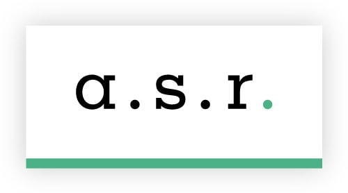
a.s.r.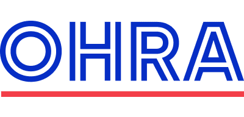
OHRA Klaverblad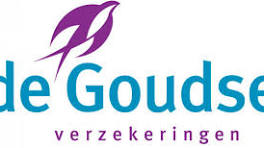
De Goudse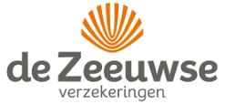
De Zeeuwse SOM MSIG Europe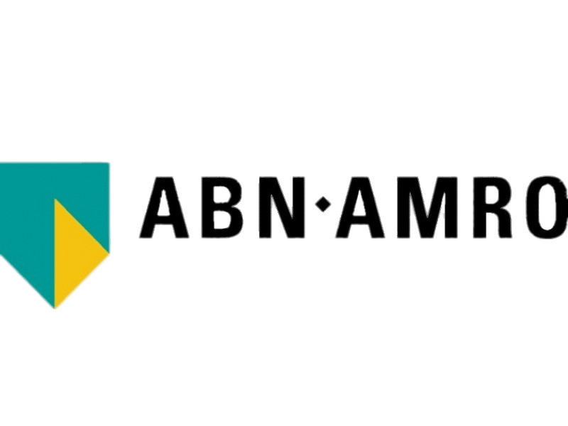
ABN AMRO TVM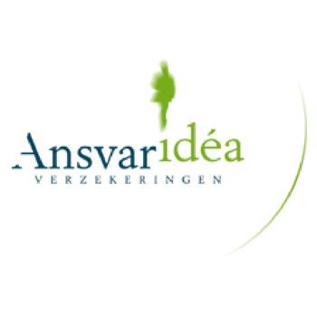
Ansvar Idéa Rhion MS Amlin ANWB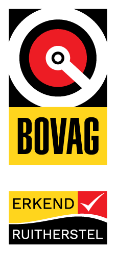
BOVAG Bovemij ING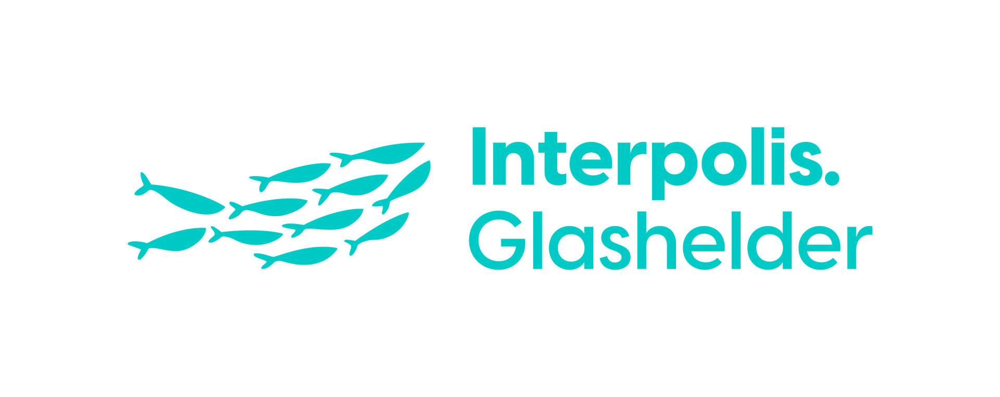
Interpolis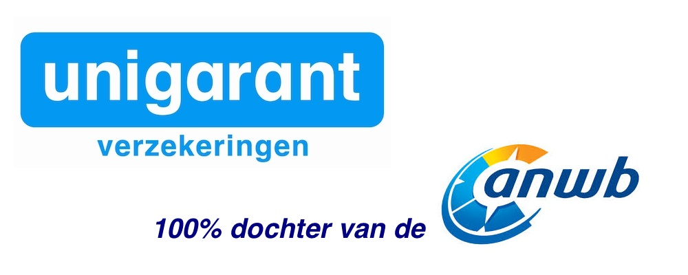
Unigarant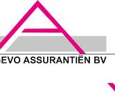
Agevo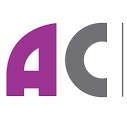
ANAC Backoffice AXI Plan Adviesgroep Baljeu Biesbosch Assuradeuren Anno 2000 Bijdevaate BlauwOranje Bongers & Lemmers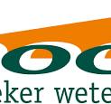
Boot Assurantie Brandsma Assuradeuren Oldeberkoop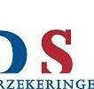
CDS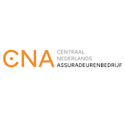
Centraal Nederlands Assuradeurenbedrijf Centraal Volmachtbedrijf CVB Cerass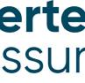
certe assuradeuren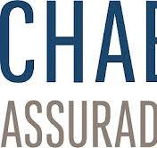
Chabot Confident Limburg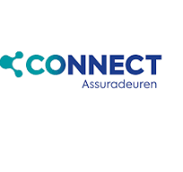
Connect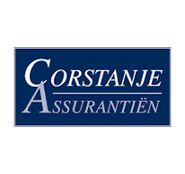
Corstanje Cumela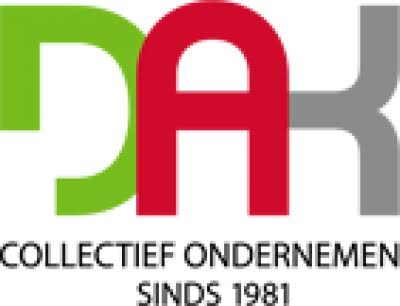
DAK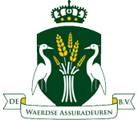
De Waerdse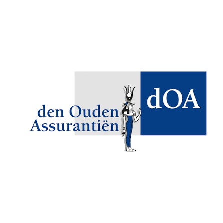
Den Ouden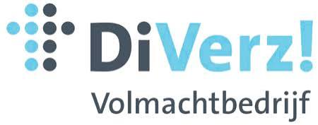
DiVerz!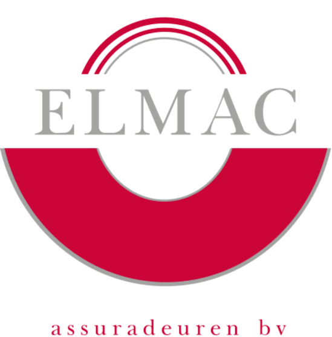
Elmac Felison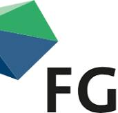
FGD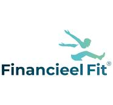
Financieel Fit |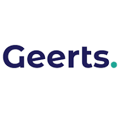
Geerts Financiële GHW Gouda & Bredius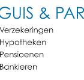
Guis & Partners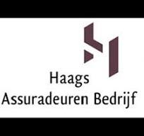
Haags Assuradeuren Bedrijf HBH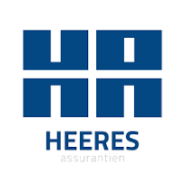
Heeres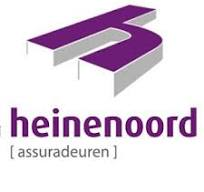
Heinenoord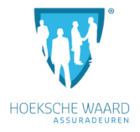
Hoeksche Waard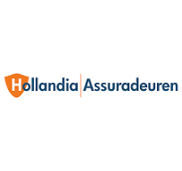
Hollandia Hoorn De Vos Metselaar en Sturop IFA Independer.nl Insura Quest Intermed Intermont ISTR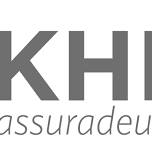
KHB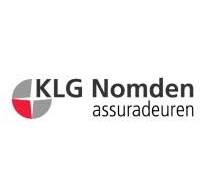
KLG Nomden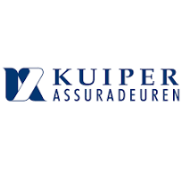
Kuiper Lancyr Langterm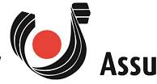
Laponder Lukassen & Boer Lussenburg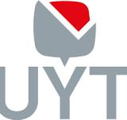
Luyten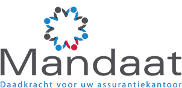
Mandaat Meijers Nedasco Nederlandse Assuradeuren NLG Noorderlinge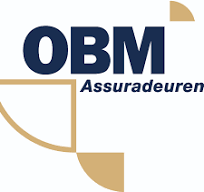
OBM Omniguard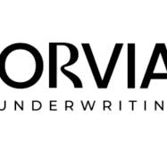
Orivia Underwriting Overwater Padmos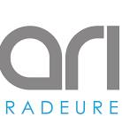
Polaris Quintes Underwriting Raadhoven Risk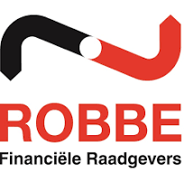
Robbe Financiële SAA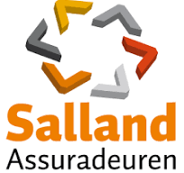
Salland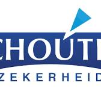
Schouten Zekerheid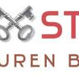
Sleutelstad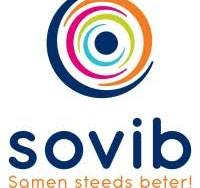
Sovib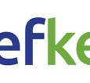
Streefkerk makelaars o.g. & assurantiën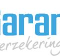
SuperGarant SUREbusiness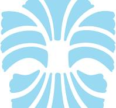
Söderberg & Partners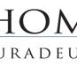
Thoma & Berkelstaete Uiterwijk Winkel Van den Hoven Van Helvoort Van Marwijk VCN Veerhaven Verheul Victor Insurance Europe VKG incl. 5319, 5138 Voogd & Voogd Vrieling W&W Weitenberg Wildschut Woongarant Yinco YouSure Verzekeringen ZichtGeen eigen risico bij sterreparatie. Als A-status Glasgarant herstelbedrijf repareren wij een ster of kleine barst via de meeste aangesloten verzekeraars zonder eigen risico. Bij vervanging geldt afhankelijk van uw verzekeraar een verlaagd eigen risico — wij checken dit altijd direct voor u.
Vraag & antwoord
Ruitschade is verzekerd als uw auto WA+ (ook wel WA-Extra) of Casco (All-Risk) verzekerd is. Heeft u alleen de verplichte WA-dekking, dan wordt ruitschade niet vergoed door uw eigen verzekeraar.
Nee. Ruitschade heeft géén invloed op uw schadevrije jaren en uw premie stijgt er niet door. U kunt dus zonder zorgen claimen — het is precies waarvoor u verzekerd bent.
Een kleine ster of barst door steenslag kan in veel gevallen worden gerepareerd — snel, goedkoop, en bij de meeste Glasgarant-verzekeraars zonder eigen risico. Wacht niet te lang: schade breidt zich uit door trillingen en temperatuurverschillen.
Schade door vandalisme is gedekt als u WA+ of All-Risk verzekerd bent. Maak eerst een politiemelding (online of bij het bureau) en neem die mee als u de schade meldt — de meeste verzekeraars vragen hierom.
Schade aan de ruit door inbraak valt ook onder WA+ of All-Risk. Doe aangifte bij de politie en bewaar het politierapportnummer — uw verzekeraar heeft dit nodig bij de schademelding.
Autoruitschade wordt niet vergoed als uw auto enkel WA verzekerd is. WA-dekking is bedoeld voor vergoeding van schade aan derden, niet aan uw eigen voertuig. U kunt de kosten wel zelf betalen — bel ons voor een offerte.
Krassen vallen doorgaans niet onder de ruitschadeverzekering, omdat het om geleidelijke slijtage gaat en niet om een plotselinge en onverwachte gebeurtenis. U kunt de ruit wel op eigen kosten laten vervangen.
Schade die al aanwezig was op het moment van aankoop of verzekering wordt niet vergoed. Verzekering dekt alleen nieuwe, onvoorziene schadegebeurtenissen. Meld dit bij ons — we kijken graag mee naar een oplossing.
Schade als gevolg van een aanrijding valt niet onder de ruitschadeverzekering, maar onder de cascoverzekering (All-Risk) of WA van de schuldige partij. Dit is een aparte claimroute — bel uw verzekeraar voor de juiste procedure.
Panoramadaken vallen niet altijd onder de standaard ruitschadeverzekering. Dit is afhankelijk van uw polis. Check uw polisblad of bel uw verzekeraar om na te gaan of u hiervoor gedekt bent.
Hoe werkt het
Wij nemen het contact met uw verzekeraar volledig uit handen.
Bel ons op 088-0225800, stuur een WhatsApp of vul het online formulier in. U hoeft zelf niets bij uw verzekeraar te melden.
No-Risk checkt uw verzekeringsdekking en meldt de schade rechtstreeks bij uw verzekeraar. U betaalt veelal geen voorschot.
We plannen een afspraak op een moment dat u uitkomt. Na herstel kalibreren wij uw ADAS-systemen en ontvangt u levenslange BOVAG garantie.
Wij staan klaar om u zo snel mogelijk te helpen op 4 locaties in de Randstad